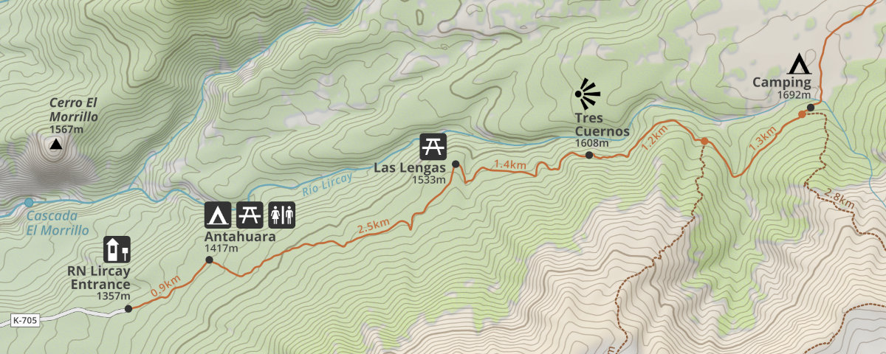
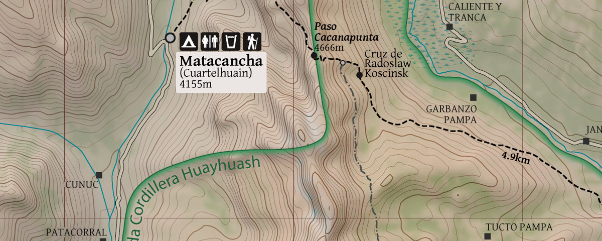
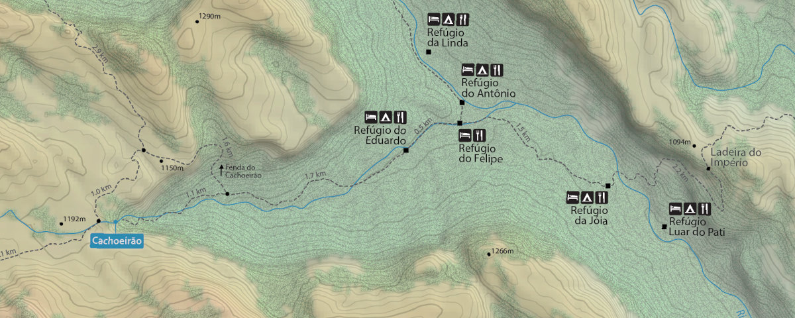

Condóres Circuit
Trekking map of the Condóres Circuit, Región del Maule, Chile. Scale 1:30,000.
I’m a software developer with a strong passion for outdoor activities. Hands on the keyboard, feet on the trail. Here you’ll find a mix of topics, always revolving around computing and cartography. Sometimes I write tutorials, sometimes I share ideas, almost always I post maps, and occasionally I disappear for long periods without adding anything new.
Some of the maps I made in recent years. You can view the maps online by clicking 'View map' or download them in GeoTIFF format (for navigation using smartphone apps). For now, none of these maps are suitable for printing.

Trekking map of the Condóres Circuit, Región del Maule, Chile. Scale 1:30,000.

Trekking map of the Cordillera Huayhuash, Ancash, Peru. Scale 1:30,000.

Trekking map of most important trail in Vale do Pati, Chapada Diamantina, Brazil. Scale 1:30,000.
Since 2015, I have been mapping waterfalls across South America, primarily in Brazil. The interactive map below provides a clustered view of this project. So far, 4,725 waterfalls have been detected through both manual and automated processes. Many of these waterfalls have names sourced from Google Maps or OpenStreetMap; consequently, some names might be inaccurate, given that these platforms are crowd-sourced and validating data precision is not always possible.
Some waterfalls don't have names: these are potentially unexplored features, or simply locations that haven't been documented online. Most of these unnamed waterfalls were detected using automated mechanisms—leveraging drainage networks, DEM (Digital Elevation Model) layers, and custom algorithms to ensure a baseline confidence level that a significant waterfall actually exists at that location.
Important notes:
ℹ️ Click a marker to see details.
fid / gidnametype